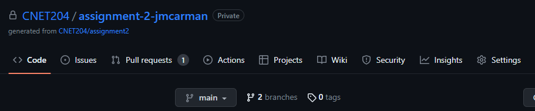
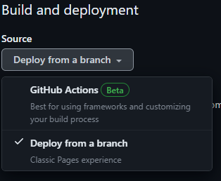
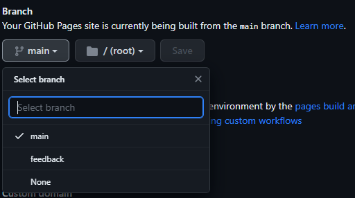
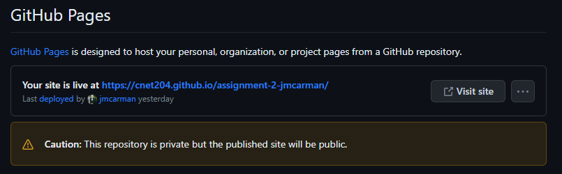

Assignment 2 - Winter 2024 - Due Friday, April 19th at 11:59pm
Overview
In this assignment you are going to learn how to automate deploying a static website from GitHub using GitHub Pages. This will allow you to deploy a website directly from your GitHub repository without needing to configure a server. You will not be using AWS in this assignment. Steps for configuring your repository to use GitHub pages are are provided below. You will then use this infrastructure to build a website. This website will be automatically deployed from your GitHub repository. The website specifications are included below.
Lecture Slides
Accepting the Assignment link to create your GitHub repository
Assignment 2 can be done individually or optionally in a group of 2. You need to decide how you are going to work on Assignment 2 before you proceed. Before you begin, you need to create your GitHub repositiory for Assignment 2 using one of the following links. You will be using this for Assignment 2.
Note: If you are working in a group, the first person to set up the Assignment 2 repository will create a team and give it a name. The second person will join the team by selecting the team name. Both users will have full access to one Assignment 2 repository.- Individual: use the following link to set up your Assignment 2 repository.
- Group: use the following link to set up your Assignment 2 repository.
Creating a test index page
Create the file index.html in your Assignment GitHub repository with the following sample code. You will replace this later, this is just for testing the configuration.
<!DOCTYPE html> <html> <head> <title>Test Page</title> </head> <body> <p>Hello World!</p> </body> </html>
Access your GitHub repository through a web browser
Login to GitHub and access your repository. Click on settings (screenshot below):
Click on Pages. Use the Source drop down under Build and Deploy and select Deploy from a branch.
Click on the Branch drop down under Build and Deploy and select Main. Click Save.
Scroll to the top of your GitHub Pages configuration page and you should see a URL to access your site. You may need to refresh your browser window.
Creating a Website
Individually or (optionally) in a group of 2 (2 people would submit 1 website): You will complete a multi-page website using the tools and techniques we've covered in Labs 1-10. Choose one of the following topics and fulfill the required pages detailed below. All materials need to be submitted to your GitHub repository and all screenshots uploaded to the dropbox on e.centennial by the due date in order to recieve marks. If you're completing this as a group, only one group member needs to submit the project (and include both names).
Topics
Pick a topic from the list below (note the attached resources). These resources are intended to get you started with your research; not as your only resource.
- Human Trafficking in Ontario
- Addressing Homelessness
- Supporting Aboriginal people
- Helping women flee domestic violence
- Endangered Species in Ontario
- Envasive Species in Ontario
- Climate Change initiatives in Ontario
- Income inequality in Canada
- Issues affecting contract workers
- Truth and Reconciliation
- Anti-Black Racism
- The effect of e-waste on the environment
Website Structure
Your website needs to include the following pages:
- Index Page (index.html)
- Providing introductory content relating to your topic.
- Issue Details (issue.html)
- Include a video, and provide further detailed information about the issue by describing any of the following:
- The community
- The issue
- Some factors that contribute to the issue
- Reflections (reflections.html)
- Your own personal reflections.
- Awareness (awareness.html)
- The power of social media and websites to promote awareness of the issue.
- Technology (tech.html)
- A video discussing the effect of technology (positive or negative) on the issue.
- Resources (resources.html)
- A resource page listing hyperlinks to all websites you have consulted in gathering information for your assignment.
Website Features
Your website should contain the following features.
- Consistent for all pages:
- Navigation
- Fonts and Colours
- Size and Layout
- Each page should have:
- a unique title
- a comment indicating your name(s) and student number. If you're working in a group, every page should contain both members name and student number.
- One linked style sheet to implement your CSS in order to ensure uniformity across all pages
Evaluation
Your website will be evaluated out of 40 based on the following criteria and breakdown.
- Design
- Content
- Stable transition between pages (navigation options don't move around)
- Accessibility
- consistency of fonts and colours
Each page will be marked out of 5 (6 pages x 5 marks per page = 35 marks), with the individual breakdown as follows:
- Navigation options are consistent, and active class is properly utilized (2 marks)
- Page layout is consistent across your website (1 mark)
- Page colours are consistent across your website (1 mark)
- Content is relevant & each page contains a comment with your name(s) and student number(s) (1 mark)
An additional 5 marks will be awarded for configuring GitHub Pages.
Submission
Your project should be submitted to your GitHub repository, and a screenshot of your index.html uploaded to the assignment dropbox by the due date in order to receive marks. As the due date is the final day of the course, any late submissions will receive a grade of 0.